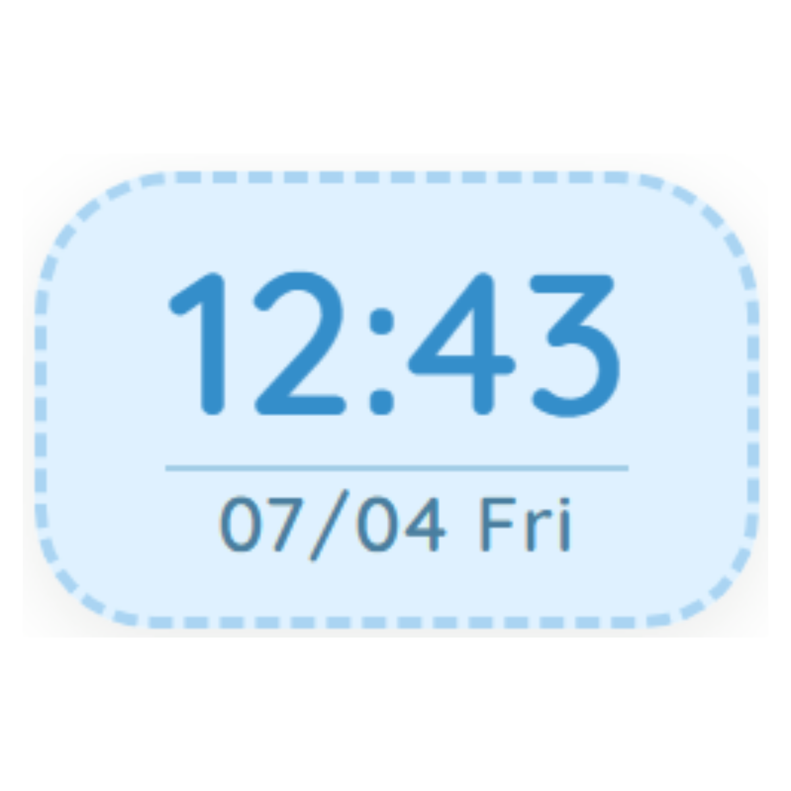
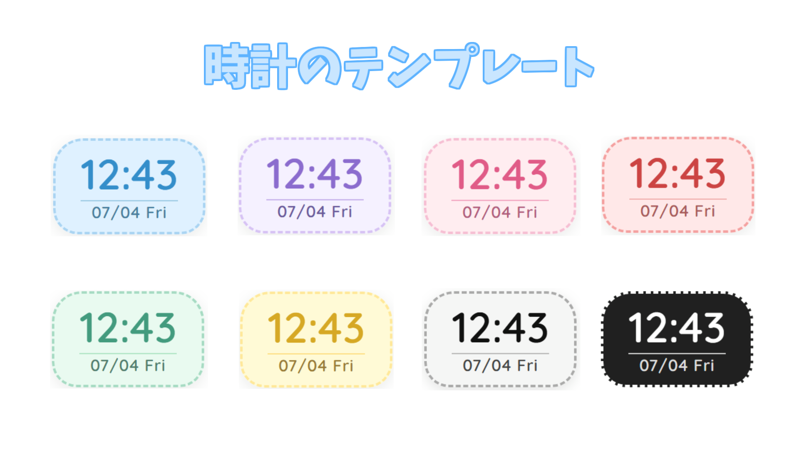
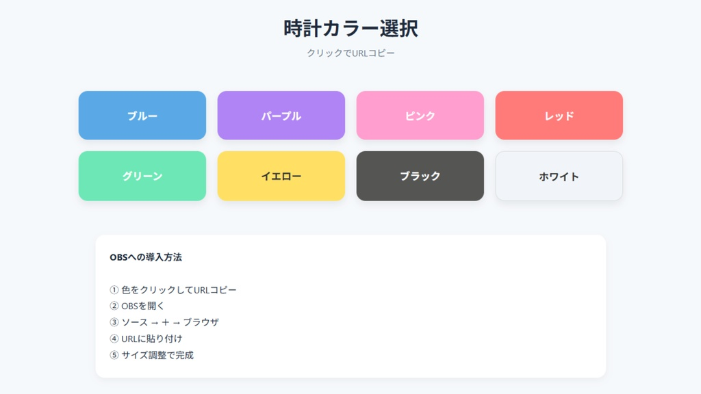

ダウンロードサイト
☰
🏠 ホーム
🧱 Minecraft
📺 配信素材
← 戻る

配信画面によくある時計
v1.0 / 12.2KB / 2026-03-20


‹
›
VTuberや配信者さん向けに作成したOBS用デジタル時計のhtmlソースです。
配信画面に現在の時刻を表示したいときにおすすめです。
OBSのソース「ブラウザ」から追加するだけで簡単にご利用できます
Downloadせずに使えるオンライン版▼
https://x.gd/1umew
ダウンロード版の使い方
・ファイルを展開する
・好きな色の時計を起動する(.html)
・OBSを起動する
・ソース(ブラウザ)を追加する
・ローカルファイルにチェックを入れる
・ファイルを選択する
・サイズや配置を決めたら終わりです
オンライン版の使い方
・URLを開く
・好きな色の時計を選ぶ
・OBSを起動する
・ソース(ブラウザ)を追加する
・URLのところに時計のリンクを張る
・サイズや配置を決めたら終わりです
できない場合は連絡してください
利用規約
・転載・改変・再配布・自作発言はご遠慮ください。
ダウンロード